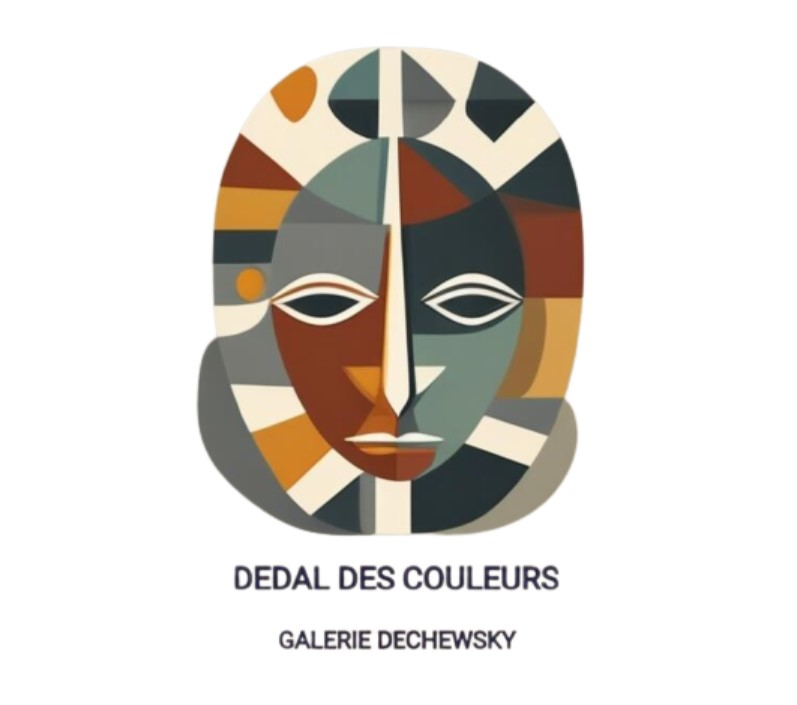

- Accueil
- Expositions
- Prestations
- Contact
Exposition actuelle du 10 Septembre 2023 au 20 Novembre 2023
Remy Rembrandtsson est né le 12 mars 1620 à
Leyde, aux Pays-Bas, au sein d’une famille
d’artistes. Son père, un célèbre marchand d’art,
l’encouragea dès son plus jeune âge à suivre sa
passion pour la peinture. A l’âge de quinze ans,
Remy entre en apprentissage chez le célèbre
Johan van den Meer, qui l’initie à la technique du
clair-obscur et à l’art de capturer la vérité de
l’âme humaine sur la toile. C’est sous la tutelle
bienveillante de van den Meer que Remy
développe son style distinctif, caractérisé par un
jeu subtil entre la lumière et l’ombre.


"Les gardiens du crépuscule"
Huile sur toile, 73x60, 1643.
"Le portrait mystérieux"
Huile sur toile, 54x87, 1660.


A l’âge de vingt-quatre ans, Remy ouvre son
premier atelier à Amsterdam. Son talent
exceptionnel pour les portraits et les scènes de
genre lui vaut rapidement une reconnaissance
dans le monde de l’art. Sa maîtrise du clair-obscur
donne vie à ses oeuvres, conférant à ses sujets
une présence presque palpable. Au fil des
années, Remy se forge une réputation en tant que
portraitiste émérite, notamment pour ses
portraits intimes de la haute société de l’époque.
Ses toiles captivent par la profondeur
psychologique de ses personnages et la précision
de sa technique. L’artiste atteint l’apogée de sa
carrière au milieu du XVIIème siècle, avec des
expositions à travers l’Europe qui suscitent
l’admiration des connaisseurs d’art et influencent
de nombreux artistes contemporains.
"La paysante" Huile
sur toile, 73x60, 1667
"La troisième main" Huile sur toile,
92x85, 1655-1657
Malgré le succès, Remy reste modeste et consacre
une partie de ses revenus à soutenir de jeunes
talents et à financer des projets artistiques
communautaires. Sa générosité et son
engagement envers l’art en font une figure
respectée dans la communauté artistique de
l’époque. Remy rembrandtsson décède
paisiblement dans sa maison à Leyde le 15
novembre 1699, laissant derrière lui un héritage
indélébile que nous avons le plaisir d’exposer dans
notre galerie. Ses oeuvres continuent d’inspirer et
de fasciner la amateurs du monde entier,
perpétuant la mémoire de ce maître du clair-
obscur du XVIIème siècle.
On vous attend ainsi nombreux pour admirer
ces oeuvres du passé portant une profondeur si
réelle.


""Autoportrait" Huile sur toile,
100x115, 1695
"Amsterdrame", Huile sur toile,
110x115, 1690
Exposition à venir du 21 novembre 2023 au 12 Janvier 2024


Alex Wardell, né le 3 avril 1975 à Boston, est un
artiste américain contemporain renommé pour
son style artistique emblématique. Dès son plus
jeune âge, Wardell manifeste un intérêt profond
pour l’art et la culture populaire. après des études
à la célèbre école d’art de la ville, il trouve
rapidement sa voie dans l’expression artistique à
travers des techniques audacieuses et
innovantes. Ses premières oeuvres sont marquées
par une utilisation intense de la couleur, des
motifs répétitifs et une exploration approfondie de
l’iconographie pop.
"Autoportrait n.37" Sérigraphie,
90x90, 2008
"Doby Serie" Sérigraphie,
100x115, 1995
Influencé par l’esthétique de la société de
consommation et la célébration des icônes de la
culture populaire, Wardell développe un style
unique qui allie une approche contemporaine à
une esthétique rétro. Ses toiles et ses oeuvres
graphiques sont caractérisés par des couleurs
vives, des motifs contrastés et une composition
dynamique. A la fin des années 1990 et au début
des années 2000, Alex Wardell attire l’attention de
la scène artistique new-yorkaise avec sa série
“Néo-Icônes”, qui revisite les figures
emblématiques de la culture pop des décennies
précédentes. Cette série audacieuse et captivante
consolide sa réputation en tant qu’artiste novateur
et audacieux.


""Autoportrait n.6" Huile sur toile,
60x60, 1998
"Can Serie", Sérigraphie,
80x80, 2000


Au fil des années, Wardell élargit son champ
d’exploration artistique, intégrant des
éléments de la culture numérique et de la
technologie contemporaine dans son travail.
Ses expositions à travers le monde
reçoivent un accueil enthousiaste, attirant
des amateurs d’art de tous horizons.
Aujourd’hui, Alex Wardell continue d’explorer
de nouvelles frontières artistiques, restant
fidèle à son style distinctif tout en
repoussant les limites de l’expression
artistique contemporaine. Ses œuvres
continuent de captiver et d’inspirer des
générations d’amateurs d’art à travers le
monde.
Prenez date le 21 novembre, date du
vernissage de la nouvelle exposition,
durant laquelle nous aurons l’honneur de
recevoir Alex Wardell, lui-même qui
viendra nous raconter plus en détail ses
œuvres et son parcours.
"Computer fever" Huile sur toile,
30x30, 1998
"Society", Sérigraphie,
100x100, 2002